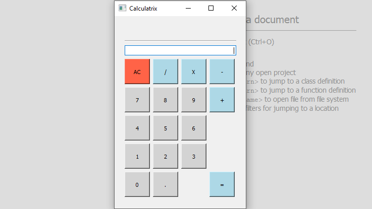

Mini calculatrice réalisée avec Qt Creator
Contexte : Formation initiale (deuxième année)
Date de début : 23/10/2021
Date de fin : 30/10/2021
Durée de la réalisation professionnelle : 1 semaine
Afin de réinvestir le langage de programmation C++ et d'utiliser le logiciel "Qt Creator", j'ai eu comme mission de réaliser une calculatrice basique effectuant les quatre opérations élémentaires (addition, soustraction, multiplication et division).
| OS utilisé(s) | Outil(s) utilisé(s) | Langage(s) utilisé(s) |
|---|---|---|
| Windows 10 | Qt Creator | C++ |
B1-6 : Organiser son développement professionnel
B2D-1 : Concevoir et développer une solution applicative
B2D-2 : Assurer la maintenance corrective ou évolutive d’une solution applicative
* : Compétences du BTS SIO (voir tableau des compétences)
Pour visualiser le projet, cliquez ci-dessous :
Si vous souhaitez télécharger le projet, cliquez ci-dessous :
06 51 27 67 33
7 Rue du Ruisselet, 51100, Reims
© Antoine Gandelin - Tous droits réservés